Докладчик
- Агапова Анна Антоновна
- Российский университет дружбы народов им. П. Лумумбы
Цель работы
Получение навыков правильной работы с репозиториями git.
Задание
- Выполнить работу для тестового репозитория.
- Преобразовать рабочий репозиторий в репозиторий с git-flow и
conventional commits.
Выполнение лабораторной
работы
- Устанавливаю gitflow.
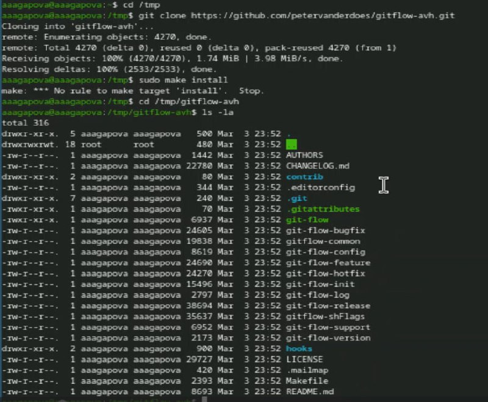
Установка gitflow
- Устанавливаю gitflow.
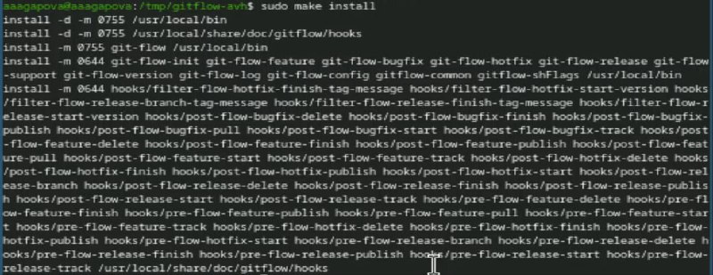
Установка gitflow
- Проверяю версию gitflow.
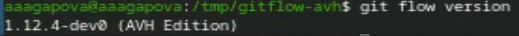
Версия gitflow
- Устанавливаю node.js.
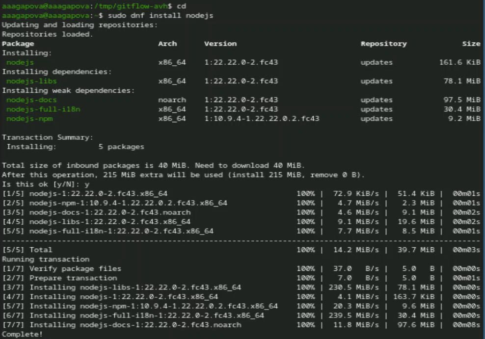
Установка node.js
- Устанавливаю pnpm.
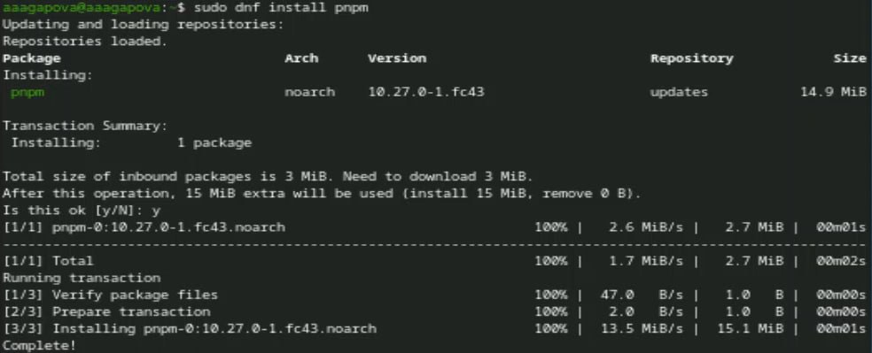
Установка pnpm
- Добавляю каталог с файлами в переменную PATH.
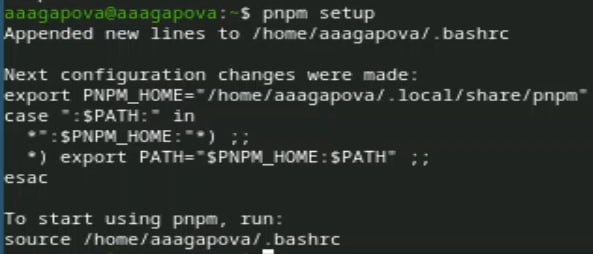
Добавление каталога
- Устанавливаю программу для форматирования коммитов.
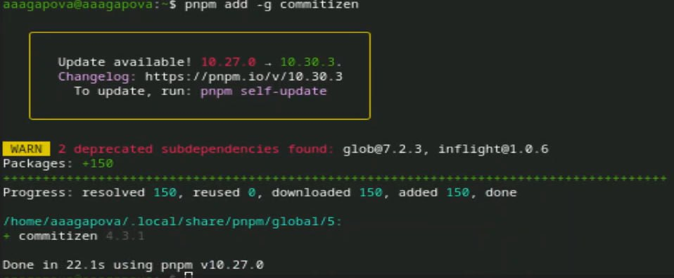
Установка программы
- Устанавливаю программу для помощи в создании логов.
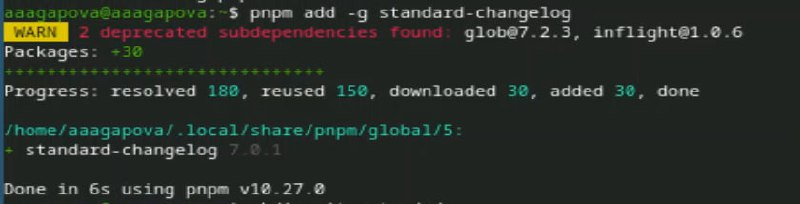
Установка программы
- Создаю новый репозиторий.
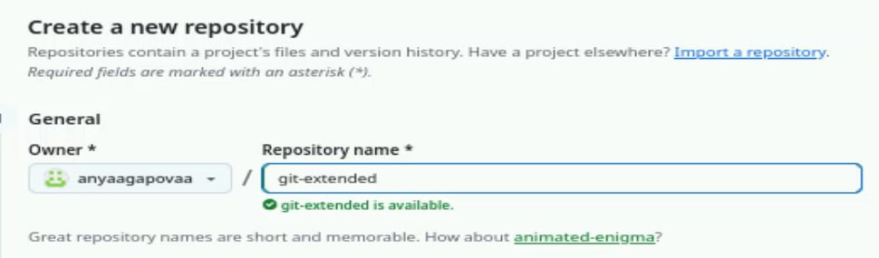
Создание нового репозитория
- Создаю папку и инициализирую.
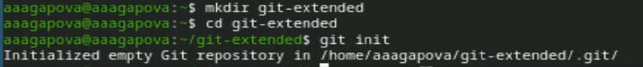
Создание папки
- Создаю первый файл и делаю коммит.
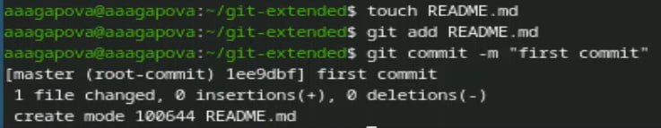
Создание файла и коммита
- Переименовываю ветку в main, подключаю удаленные репозитории и
отправляю на GitHub.
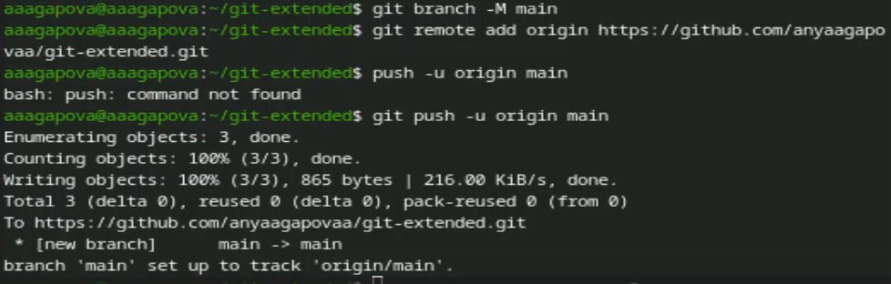
Отправление на GitHub
- Редактирую файл package.json.
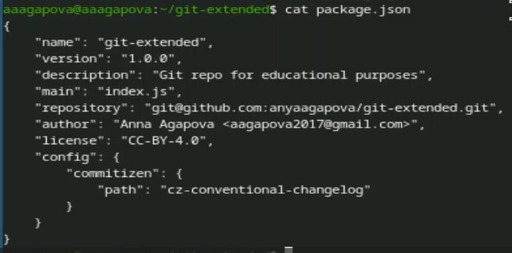
Редактирование файла
- Добавляю новые файлы, выполняю коммит и отправляю на GitHub.
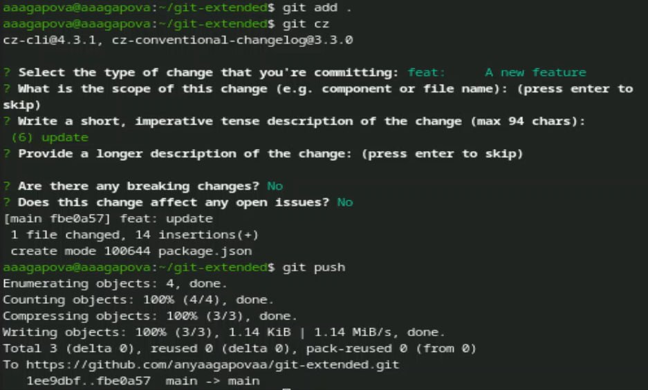
Отправление на GitHub
- Инициализирую gitflow.
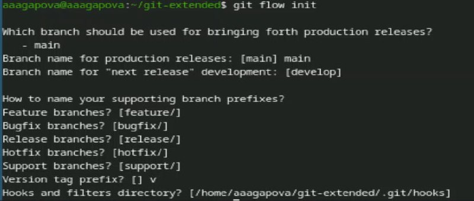
Проверка работы
- Проверяю, что я на ветке develop.
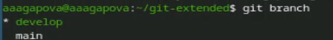
Проверка ветки
- Загружаю весь репозиторий в хранилище.
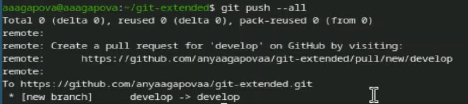
Загрузка репозитория
- Устанавливаю внешнюю ветку как вышестоящую для этой ветки.
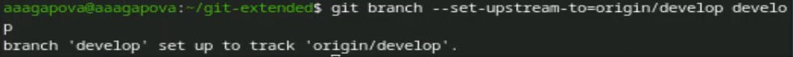
Установка ветки
- Создаю релиз с версией 1.0.0.
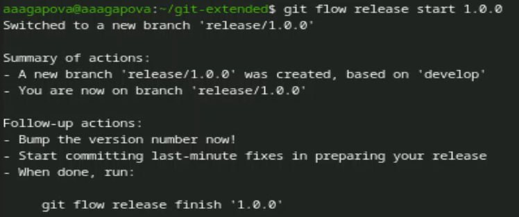
Создание релиза
- Создаю журнал изменений и добавляю журнал изменений в индекс.
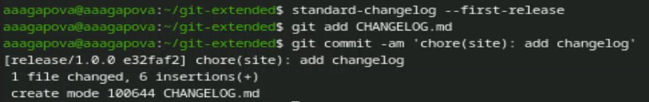
Создание журнала
- Заливаю релизную ветку в основную ветку.
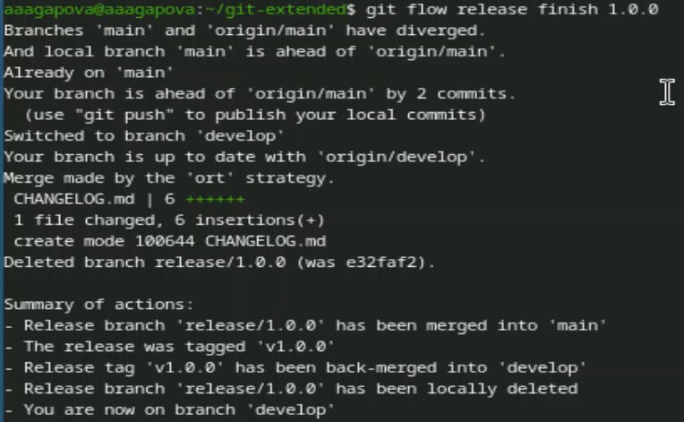
Завершение релиза
- Отправляю данные на GitHub.
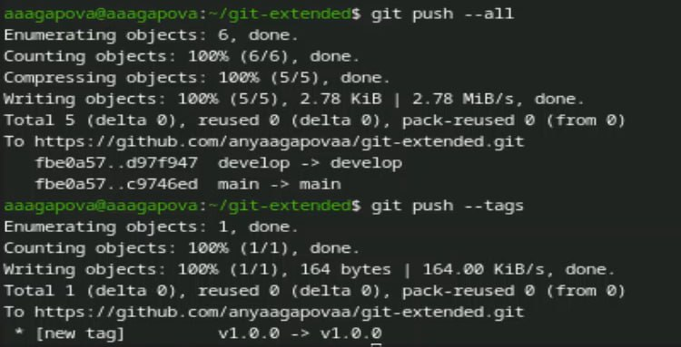
Отправление на GitHub
- Создаю релиз на github.
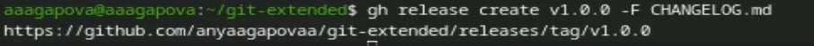
Создание релиза
- Создаю ветку для новой функциональности.
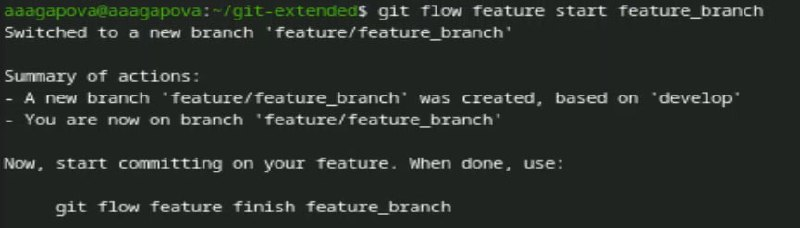
Создание ветки
- Объединяю ветку feature_branch c develop.
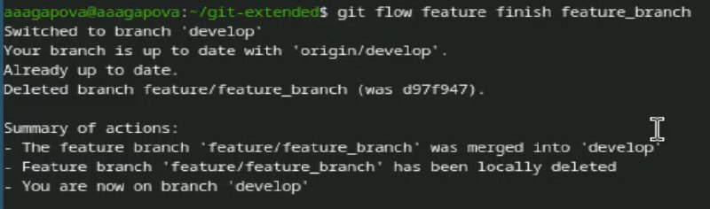
Объединение веток
- Создаю релиз с версией 1.2.3.
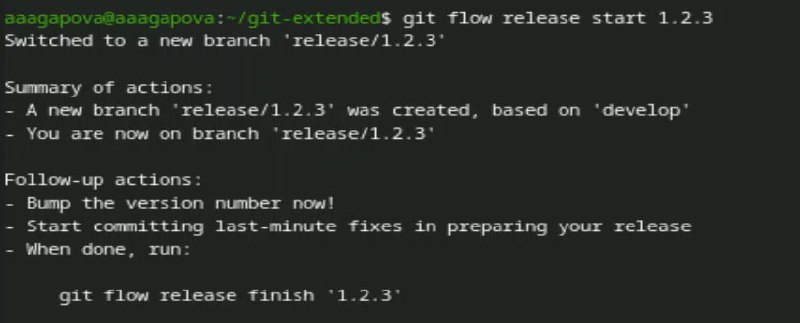
Создание релиза
- Обновляю номер версии в файле package.json.
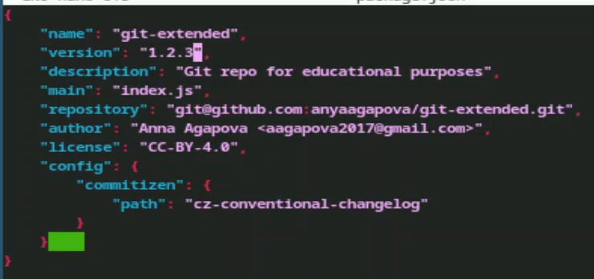
Обновление файла
- Создаю журнал изменений и добавляю журнал изменений в индекс.
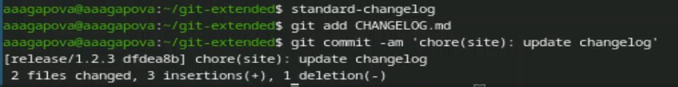
Создание журнала
- Заливаю релизную ветку в основную ветку.
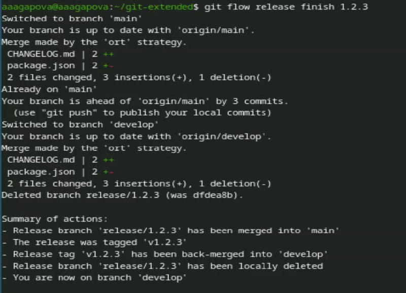
Завершение релиза
- Отправляю данные на GitHub.
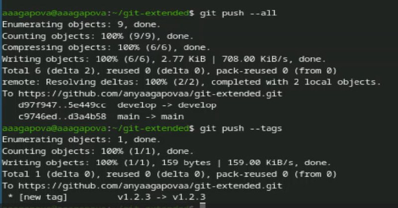
Отправление на GitHub
- Создаю релиз на github с комментарием из журнала изменений.
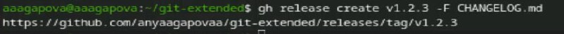
Создание релиза
- Проверяю, что все файлы создались.
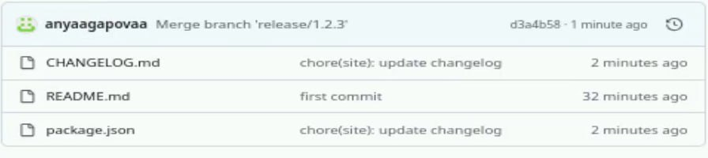
Проверка
- Проверяю, что релизы создались.
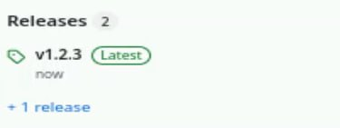
Проверка
Выводы
Я получила навыки правильной работы с репозиториями git.